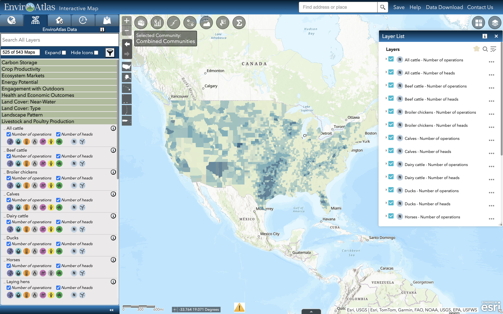
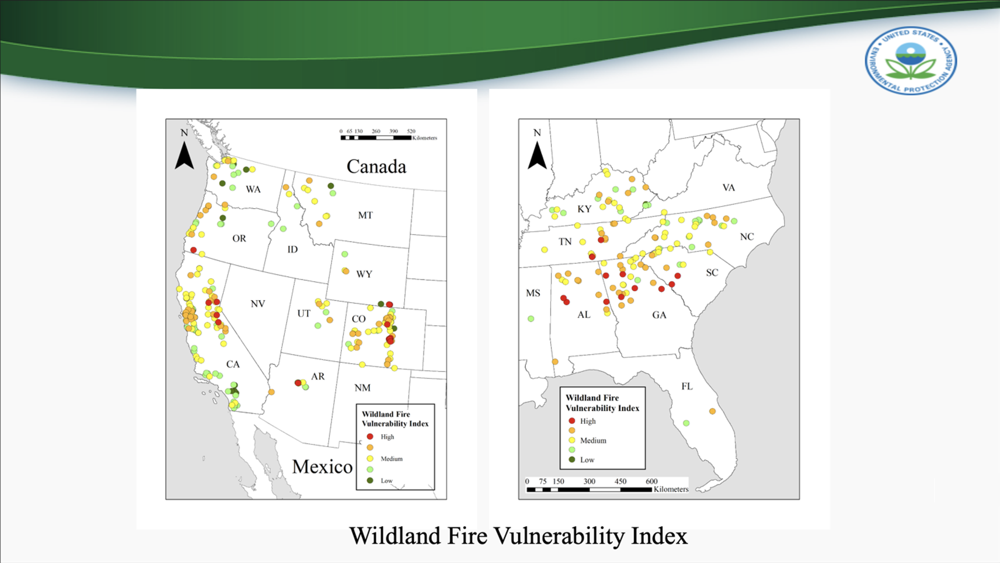
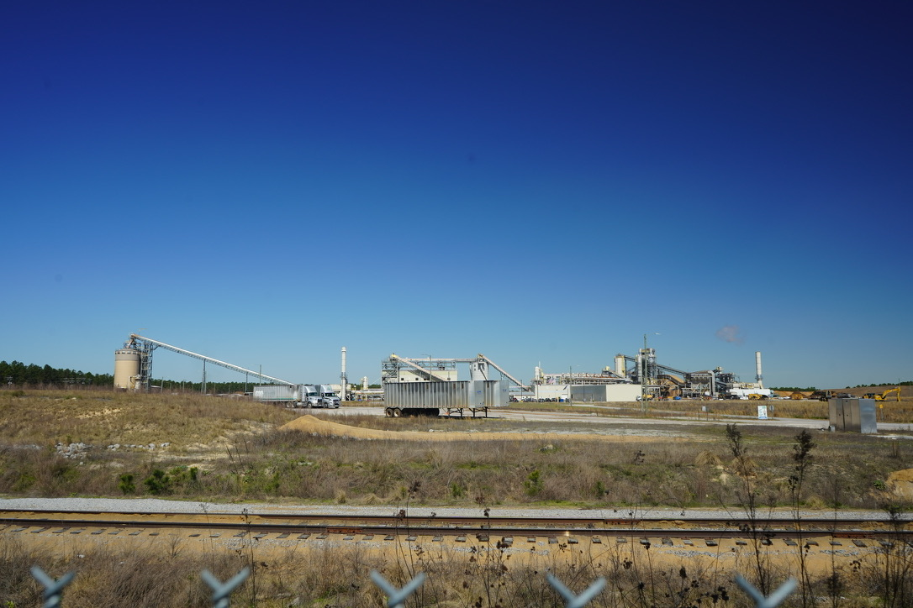
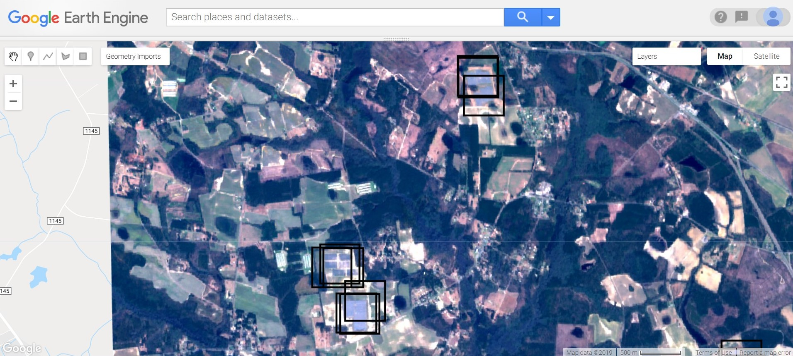
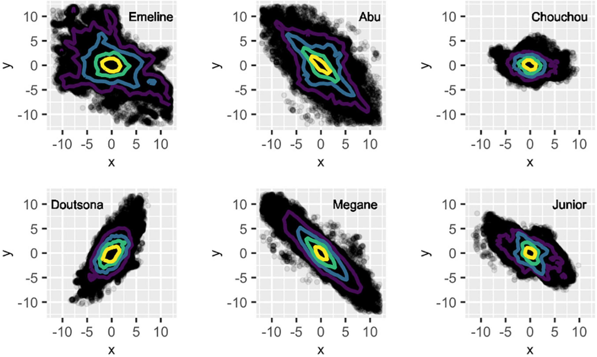
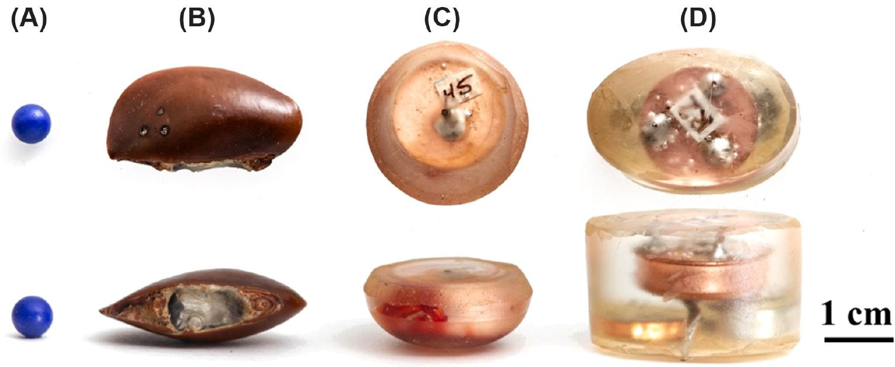

Environmental Protection Agency

Biological Highways in the Sky
Wildland fire smoke plumes as generators and mobilizers of biological aerosols

EnviroAtlas
Livestock and poultry production

A vulnerability assessment of wildland fire impacts to public drinking water in the western and southeastern United States

U.S. EPA Wood Pellet Research Project
Duke University

A season independent U-net model for robust mapping of solar arrays using Sentinel-2 imagery

Long distance seed dispersal by forest elephants

Estimation of gut passage time of wild, free roaming forest elephants
Columbia University

Evidence for paternal kin bias in the social affiliation of adult female blue monkeys